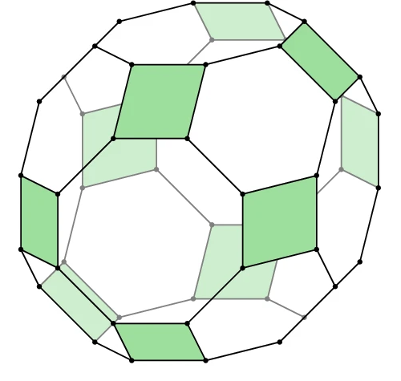
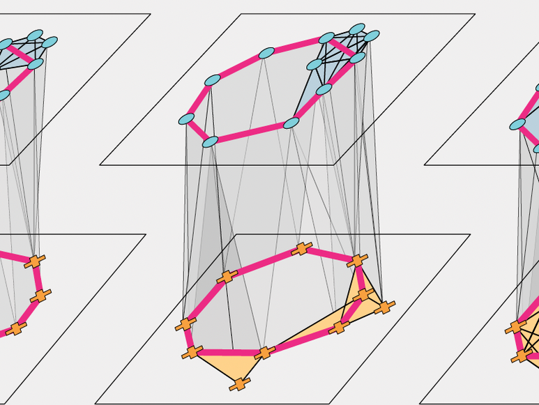
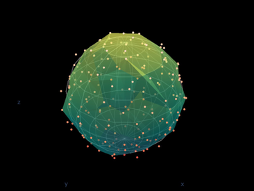

Dowker's Theorem for Higher-Order Relations in JACT!
With Vin de Silva, Vladimir Itskov, Michael Robinson, Radmila Sazdanovic, Niko Schonsheck, Melvin Vaupel, and Iris Yoon, we extend Dowker's classical theorem from relations between two sets to multiway relations on any number of sets, proving functorial homotopy equivalences between the associated Dowker complexes and a rectangle complex, and working out the seven homotopy types that arise for ternary relations. Read the paper here!

Tracking Cycles in PNAS!
With Iris Yoon and collaborators, we demonstrate how the method of analogous cycles can be applied to track structure across neural manifolds, allowing us to study how topologically-structured information evolves as it is processed by the brain. Read the paper here!

Open Applied Topology available!
The Open Applied Topology (OAT) software package, developed by Gregory Henselman-Petrusek at PNNL in collaboration with us and Lori Ziegelmeier as part of the NSF-funded ExHACT project, expands the horizons of topological data analysis by allowing us to work directly with chain complexes. Explore cycle representatives, compute maps on homology, and more!